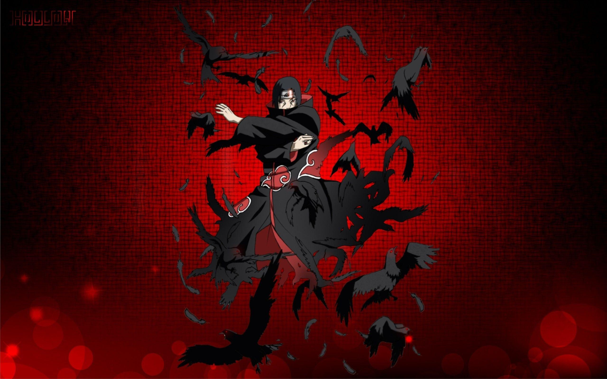
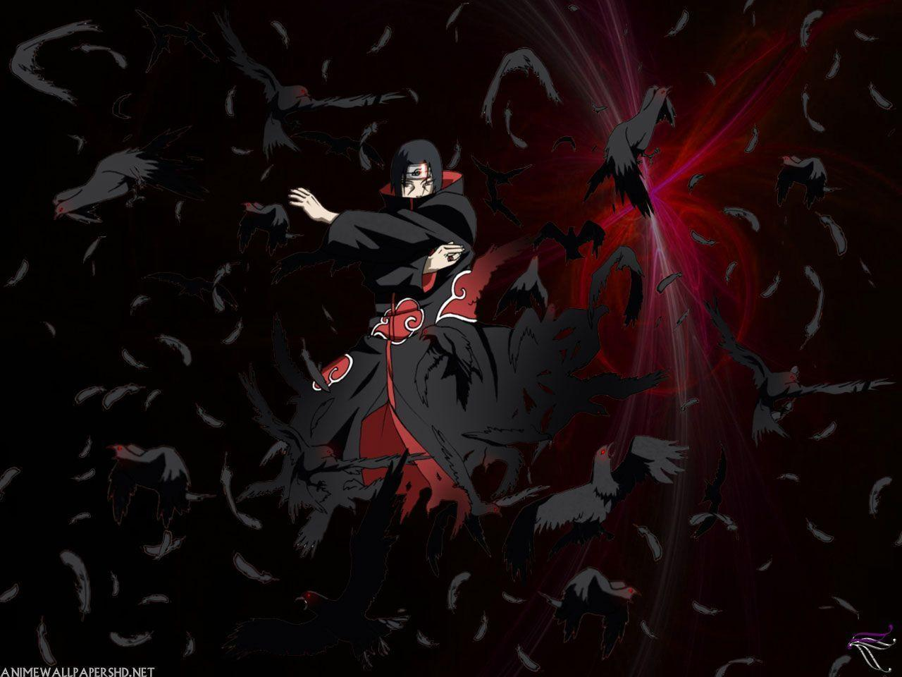

It is also a matter of great pride for us that we are the only nation that sacrificed their lives for the sake of their mother tongue on 21st February of 1952. In order to show respect to them, UNESCO has declared 21st February as International Mother Language Day. The name of the capital of Bangladesh is Dhaka. It is the busiest and populated city in our country. The total population is 16 crore. The total area of our country is 1,47,570 square km. 
Our country is a river-oriented country. The main rivers of our country are Padma, Jamuna, Meghna. But due to pollution and river pollution, all of these rivers have shrunk. People of all religions live peacefully in this country but most of them are Muslim. The famous places for tourist’s visit to our country are Sundarban, Cox’sBazar, St Martin, Kuakata. Sundarban is the largest Mangrove forest in the world. Cox’s Bazar has the longest sea beach. 
The main occasion that people celebrate is Eid Ul Fitr, Eid Ul Adha, Pahela Baishakh, etc. Bangladesh is a developing country. The economics of this country is mainly based on agriculture. The main crops that this country produces are rice, jute, tea, fruit, etc. The country also earns a large amount of foreign remittance by exporting RMG and Manpower. The main food that the inhabitant of this country eat is rice and fish.

Hilsha is the national fish and Doyel is the national bird of our country. The national beast of the country is the Royal Bengal Tiger. The national bird of our country is Magpie and the national flower is Water Lily. Hadudu is the national game of our country but Cricket is the most popular game. People of this country know how to live happily and peacefully within poverty and national hazards.